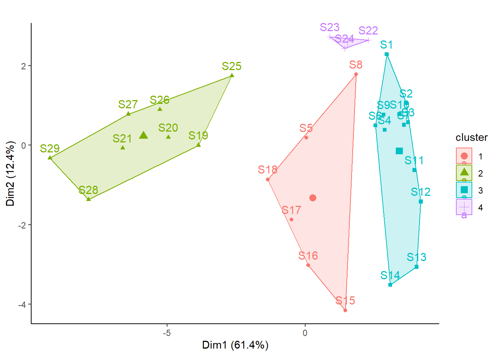

Der Datensatz enthält Daten zum Vorkommen von Fischarten und den zugehörigen Umweltvariablen im Fluss Doubs (Jura). Es gibt 29 Probestellen (sites), an denen jeweils die Abundanzen von 27 Fischarten (auf einer Skalen von 0 bis 5) erhoben wurden. In dieser Demo verwenden wir die Artdaten.
Cogo Satr Phph Babl
Min. :0.0000 Min. :0.000 Min. :0.000 Min. :0.000
1st Qu.:0.0000 1st Qu.:0.000 1st Qu.:0.000 1st Qu.:1.000
Median :0.0000 Median :1.000 Median :3.000 Median :2.000
Mean :0.5172 Mean :1.966 Mean :2.345 Mean :2.517
3rd Qu.:1.0000 3rd Qu.:4.000 3rd Qu.:4.000 3rd Qu.:4.000
Max. :3.0000 Max. :5.000 Max. :5.000 Max. :5.000
Thth Teso Chna Pato
Min. :0.0000 Min. :0.0000 Min. :0.0000 Min. :0.0000
1st Qu.:0.0000 1st Qu.:0.0000 1st Qu.:0.0000 1st Qu.:0.0000
Median :0.0000 Median :0.0000 Median :0.0000 Median :0.0000
Mean :0.5172 Mean :0.6552 Mean :0.6207 Mean :0.8966
3rd Qu.:1.0000 3rd Qu.:1.0000 3rd Qu.:1.0000 3rd Qu.:2.0000
Max. :4.0000 Max. :5.0000 Max. :3.0000 Max. :4.0000
Lele Sqce Baba Albi
Min. :0.000 Min. :0.000 Min. :0.000 Min. :0.000
1st Qu.:0.000 1st Qu.:1.000 1st Qu.:0.000 1st Qu.:0.000
Median :1.000 Median :2.000 Median :0.000 Median :0.000
Mean :1.483 Mean :1.931 Mean :1.483 Mean :0.931
3rd Qu.:2.000 3rd Qu.:3.000 3rd Qu.:3.000 3rd Qu.:1.000
Max. :5.000 Max. :5.000 Max. :5.000 Max. :5.000
Gogo Eslu Pefl Rham Legi
Min. :0.000 Min. :0.000 Min. :0.000 Min. :0.000 Min. :0
1st Qu.:0.000 1st Qu.:0.000 1st Qu.:0.000 1st Qu.:0.000 1st Qu.:0
Median :1.000 Median :1.000 Median :1.000 Median :0.000 Median :0
Mean :1.897 Mean :1.379 Mean :1.241 Mean :1.138 Mean :1
3rd Qu.:4.000 3rd Qu.:2.000 3rd Qu.:2.000 3rd Qu.:2.000 3rd Qu.:2
Max. :5.000 Max. :5.000 Max. :5.000 Max. :5.000 Max. :5
Scer Cyca Titi Abbr
Min. :0.0000 Min. :0.0000 Min. :0.000 Min. :0.0000
1st Qu.:0.0000 1st Qu.:0.0000 1st Qu.:0.000 1st Qu.:0.0000
Median :0.0000 Median :0.0000 Median :1.000 Median :0.0000
Mean :0.7241 Mean :0.8621 Mean :1.552 Mean :0.8966
3rd Qu.:1.0000 3rd Qu.:1.0000 3rd Qu.:3.000 3rd Qu.:1.0000
Max. :5.0000 Max. :5.0000 Max. :5.000 Max. :5.0000
Icme Gyce Ruru Blbj
Min. :0.0000 Min. :0.00 Min. :0.000 Min. :0.000
1st Qu.:0.0000 1st Qu.:0.00 1st Qu.:0.000 1st Qu.:0.000
Median :0.0000 Median :0.00 Median :1.000 Median :0.000
Mean :0.6207 Mean :1.31 Mean :2.172 Mean :1.069
3rd Qu.:0.0000 3rd Qu.:2.00 3rd Qu.:5.000 3rd Qu.:2.000
Max. :5.0000 Max. :5.00 Max. :5.000 Max. :5.000
Alal Anan
Min. :0.000 Min. :0.000
1st Qu.:0.000 1st Qu.:0.000
Median :0.000 Median :0.000
Mean :1.966 Mean :0.931
3rd Qu.:5.000 3rd Qu.:2.000
Max. :5.000 Max. :5.000
k-means ist eine lineare Methode und daher nicht für Artdaten geeignet), darum müssen wir unsere Daten transformieren (für die meisten anderen Daten ist die Funktion „scale“, welche jede Variable so skaliert, dass sie einen Mittelwert von 0 und einen Standardabweichungswert von 1 hat, besser geeignet) die Randsumme der Quadrate gleich eins machen
# Visualisierungp_load(factoextra)fviz_cluster(kmeans_1, main ="", data = spe) +theme_classic()

Wie viele Cluster (Gruppen) sollen definiert werden? Oft haben wir eine Vorstelung über den Range der Anzahl Cluster. Value criterions wie der Simple Structure Index (ssi) können eine zusätzliche Hilfe sein, um die geeignete Anzahl von Clustern zu finden.
# k-means partionierung, 2 bis 10 Gruppenset.seed(123)km_cascade <-cascadeKM(spe_norm, inf.gr =2, sup.gr =10, iter =100, criterion ="ssi")km_cascade$results
2 groups 3 groups 4 groups 5 groups 6 groups 7 groups 8 groups
SSE 8.2149405 6.4768108 5.0719796 4.30155732 3.5856120 2.9523667 2.4840549
ssi 0.1312111 0.1675852 0.1240975 0.05927008 0.1178577 0.1444813 0.1369294
9 groups 10 groups
SSE 2.0521888 1.75992916
ssi 0.1462769 0.09995081
# k-means-Clustering mit 3 Gruppen durchführenset.seed(123)kmeans_2 <-kmeans(spe_norm, centers =3, nstart =100)# Clustering-Resultat in Ordinationsplots darstellenfviz_cluster(kmeans_2, main ="", data = spe) +theme_classic()